2d simulation rather than 3d. The option 3d also exists - it is the default.
This option enables IMD to perform the Common-Neighbour Analysis (CNA) during a simulation. The CNA is done in the same way as in the utility program imd_cna.
The CNA starts at step cna_start (default: 0) and ends at cna_end (default: maxsteps). The CNA is performed every cna_int steps. The nearest neighbour distance for common neighbours must be given by the parameter cna_rcut. Using the parameter cna_write, a list of (up to eight) four-digit pair types ijkl can be given. Atoms belonging to these pair types are written to the files <outfiles>.<n>.<ijkl>.cna.
For fcc-like crystal structures, the option cna enables IMD to
write atoms belonging to a specific crystallinity into files
<outfiles>.<n>.crist which are written every
cna_int steps. Four types of crystallinity can be selected:
| 0 | atoms belonging to the fcc structure |
| 1 | atoms belonging to the hcp structure |
| 2 | 12-fold coordinated atoms not belonging to the fcc or hcp structure |
| 3 | not 12-fold coordinated atoms |
Using the parameter cna_crist, a list of up to four types of crystallinity can be given. The format of the .crist files is the one of IMD configuration files where the 10th column represents the type of crystallinity.
Note: The writing of .cna files is disabled when the parameter cna_crist is used.
This option enables IMD to combine atoms of one or several virtual types into superatoms that behave like rigid bodies. Superatoms are defined in the parameter file with the IMD parameter rigid in the following form:
rigid v_1 v_2 ... v_n i j (k)
Here, v_1, v_2, ..., v_n (n<=total_types) are virtual types that are combined into a superatom. The integers i, j(, k) take on the values 0 or 1. They define a restricted motion of the atoms of the superatoms. For example, in a 3d simulation, 1 0 1 means rigid motion in x and z direction while in y direction, the constituent atoms of the superatom can move freely. Hence, 1 1 1 means complete rigidity and 0 0 0 no rigidity at all (no superatom).
It is possible to define up to total_types different (nonintersecting) superatoms.
Note:Only translational motion of the superatoms is
possible; rotational motion is suppressed.
The option rigid
is currently implemented only for the ensembles nve, mik, and nvt.
This option enables the usage of neighbor lists, which can be reused for a certain number of steps. The neighbor list of an atom includes the indices (cell and atom number within cell) of all those atoms, whose distance at the moment of creation of the list is within the interaction cutoff radius, or exceeds it by not more than nbl_margin (which is a parameter). The neighbor lists include all interacting particles, and thus remain valid, as long as no atom has moved by more than nbl_margin. If this is no longer the case, the neighbor lists are recomputed. The advantage of neighbor lists is, that the number of atom pairs for which the distance has to be computed is reduced by up to a factor 6, which substantially reduces the computation time ( by up to 40%). The disadvantage is, that neighbor lists require a considerable amount of memory, which is why they are made optional. The speedup depends on the value of nbl_margin. The larger it is, the longer the neighbor list remains valid - and the more distances have to be computed at each step. A value of some 15% of a typical nearest neighbor distance seems to be a good starting point. The neighbor list then has to be recomputed every 10-20 steps.
The maximal number of atom pairs in the neighbor list is determined as a rough estimate times a factor nbl_size, a parameter which defaults to 1.1. If the neighbor list turns out to be too small, IMD aborts with an error message. This may happen if the density of the system increases significantly, e.g. in an NPT simulation. In such a case, nbl_size can be set to a larger value, like 1.2. Note that the memory requirement is directly proportional to nbl_size.
Limitations: Neighbor lists are currently implemented only in 3d, and only for pair and EAM interactions. In principle, they could also be implemented in 2d and for angle-dependent interactions, but for these the benefit is less important (neighbor lists are already in use for some parts of the computation). Epitax is also not supported with neighbor lists - they make little sense, if the number of particle can change at any time.
nMoldyn is a postprocessor which computes from an MD trajectory various correlation functions, especially ones which can be measured by inelastic neutron scattering. The functionality of nMoldyn is described in J. Comput. Chem. 24, 657-667 (2003). The option nmoldyn enables IMD to write an MD trajectory to a single file, which can subsequently be converted with the utility program imd2nc.py to the netCDF format required by nMoldyn.
IMD writes every nmoldyn_int timesteps a configuration to the .nmoldyn trajectory file. The writing interval determines the maximal frequency available in the correlation functions, whereas the length of the trajectory determines the lowest frequency. It is usually not required to write at every step, but only every 10 steps or so, depending on the frequency range required. If the flag nmoldyn_veloc=1, the velocities are also included in the trajectory file, otherwise they are computed numerically from the positions. This is accurate enough only for very small values of nmoldyn_int. For larger nmoldyn_int it is recommended to write also the velocities (this is the default).
The nMoldyn trajectory files can get rather large. Especially for single particle correlation functions it is not necessary to have the trajectories of all atoms, but only those of a representative subset. For this reason, IMD writes only atoms with virtual types smaller than ntypes to the trajectory file. By giving part of the atoms larges virtual types, excessively large trajectory files can be avoided.
Note: With the nmoldyn option, the atoms must be numbered such, that with increasing number the virtual type does not decrease (i.e., smaller virtual types come first). Moreover, the numbering must start at zero, and must have no gaps.
The option dsf allows to compute the dynamical structure factor in an MD simulation, using an NVE integrator. Every dsf_int steps, IMD computes the spacial Fourier transform for a number of k-vectors, and writes it to a .dsf File. The value of dsf_int determines the maximal frequency in the resulting time series, whereas the resolution in k-space is determined by the size of the sample (the density of the reciprocal lattice). The temporal Fourier transform of the autocorrelation of time series in the .dsf file is then computed with the postprocessor dynsf. The weights of the different atom types, usually the coherent scattering length, is given by the parameter dsf_weight, which requires ntypes values. The spacial Fourier transform is computed for dsf_nk series of k-vectors, each of which is given in the following format:
dsf_k k0_x k0_y k0_z kdir_x kdir_y kdir_z n
representing the series of k-vectors k0 + i * kdir, i=0,...,n. dsf_nk must be specified before any dsf_k entry, and there must be exactly dsf_nk such entries. The k-vectors are given with respect to the reciprocal basis of the box vectors.
This option enables the computation of the mean square displacements (MSQDs) (for each atom type and each direction separately). It shares its parameters with the option corr. The computation of the MSQDs is started at step correl_start, and ends at step correl_end. The reference positions are first stored at step correl_start, and then they are reset every correl_int steps (or never, if correl_int=0, which is the default). The MSQDs are computed every correl_ts steps between correl_start and correl_end, and are written to the file <outfiles>.msqd, preceeded by the current simulation time. The format of the msqd file is:
time d2x_1 d2y_1 [d2z_1] [d2x_2 d2y_2 [d2z_2]] ...
where d2x_n is the mean square displacement of particles of type n in x direction, etc. With the options msqd_ntypes (default 1) and msqd_vtypes (default 0) you can choose, whether you want mean square displacements for real types only or for all virtual types separately. If you choose both options, the leading columns are for real types, the rear ones are for the virtual types.
The parameters correl_start and correl_end can be used to switch this option on and off during a multiphase simulation.
This option enables the computation of the (spherically averaged) van Hove self-correlation function (VHSCF).
The computation of the VHSCF is started at step correl_start, and ends at step correl_end. Every correl_int steps after correl_start, the correlation histogram is written to files <basename>.corr<n>.<i>, where <n> is a running number and <i> ist the atom type. Every correl_ts steps, correlation data is added to the histogram.
The dimension of the correlation histogram is detemined by the parameters correl_tmax (time direction) and correl_rmax (radial direction). The step width of the histogram is correl_ts in time direction, and (half) the diagonal of the box, divided by correl_rmax, in radial direction.
There are several modes for the output format, determined by the parameter correl_omode:
1 for gnuplot files with 1 empty line between blocks
2 for gnuplot files with 2 empty lines between blocks
3 for large gnuplot files (fully occupied matrix) with no empty lines
4 for short files (refer to source for documentation)
(writes only a short header followed by matrix elements)
The third mode uses a further parameter, GS_rcut, which is a cutoff radius for the data to be written.
The parameters correl_start and correl_end can be used to switch this option on and off during a multiphase simulation. Beware: in the current implementation, the histogram is allocated only once at the beginning of the simulation, and so the dimensions of the histogram must not change during the simulation!
Known bugs:
Resetting the reference positions every correl_int steps is fine, but why do we have to write out and clear the histogram each time?
The time in the histogram is taken modulo correl_tmax, but the reference positions are not reset, which spoils the whole histogram, if correl_tmax > correl_int!
Why don't we use a radial cutoff of the histogram right away, instead of the wiered constuction with the diagonal, which works only for orthogonal boxes anyway? In any case, it is better not to compute the parts of the histogram that are not needed, instead of just not writing them out (parameter GS_rcut)!
The disloc option enables certain features useful to detect dislocations in quasicrystals.
If the disloc option is present, potential energy and position of each particle can be compared to reference values. These reference values are either read from the configuration file(which then must have a correct header), or set to values computed at a certain time step.
If the parameter calc_Epot_ref = 0 (default), the reference potential energy is read from the column labelled Epot_ref in the configuration file. Otherwise, the potential energy at step reset_Epot_ref (default 0) becomes the reference potential energy.
Similarly, the reference positions of the particles are set to the actual positions at step update_ort_ref (default 0). If update_ort_ref < 0, the reference positions must be given in the columns labelled x_ref, y_ref and z_ref (3D only) in the configuration file.
If the parameter Epot_diff = 1 (default), the potential energy written to .pic files and to energy distribution files is the difference of the actual potential energy and the reference potential energy. This can be switched off by setting Epot_diff = 0.
If dem_int > 0, particles whose potential energy deviates from the reference energy by more than min_dpot are written in intervals of dem_int to differential energy map files. Similarly, if dsp_int > 0, particles whose squared displacement from the reference position exceeds min_dsp2 are written in intervals of dsp_int to displacement map files. The writing of these files can be switched off by setting the writing intervals to zero.
If lindef_interval is positive, the sample is linearly deformed every lindef_interval steps. The linear deformation is described by a full deformation matrix A, whose rows are given by the scalar lindef_size times the vectors lindef_x, lindef_y, and lindef_z (3d only). The transformation x -> x + A x is applied to both the atom positions and the box vectors. In order to prevent the box contents from just snapping back, periodic boundary conditions are required, or boundary layers of atoms which are moved during the deformation, but are kept fixed otherwise.
The older interfaces for scale and shear deformations, activated by the parameters exp_interval and hom_interval, are deprecated and should no longer be used.
The deform option requires free boundary conditions (the box won't be deformed, but periodic boundary conditions can be used, e.g. when the deformation is orthogonal to the pbc (use at own risk, take care of angular momentum). A deform step is performed if max_deform_int is positive, and either the last deform step was done max_deform_int steps ago, or a relaxation integrator is active and the sample is sufficiently relaxed. In a deform step, all atoms of virtual type v are shifted by the deform_shift vector for that type v. A deform_shift for type v is specified as follows in the parameter file:
deform_shift v shift_vector
All shift vectors are additionally multiplied with the scalar deform_size. During the first annealsteps steps, no deformations are done. This mechanism can be used both for shears (deform_shift parallel to sample boundary) and for compressions or expansions (deform_shift perpendicular to sample boundary). The atoms with the virtual types concerned are usually located in two boundary layers of the sample.
Besides translations of atoms, the option deform also allows shear transformations of atoms with a common virtual type. In this case, the additional parameter deform_shear has to be specified in the parameter file in the following format:
deform_shear v shear_vector
The shear transformation is given by
| x' = x + s·(x-b) v |
where the vector s is determined by deform_shear and v is represented by the parameter deform_shift. deform_shift, which should be a unit vector, has now the meaning of the shear direction. The base point b of the shear transformation can be specified through the parameter deform_base which is the origin of the simulation box by default. This point determines the invariant plane of the shear transformation. deform_base has to be given in the parameter file in the format
deform_base v base_point
This option enables Force Boundary Conditions, which are extra forces acting on atoms of certain virtual types. This is implemented for the nve and nvt ensembles, and for the relaxation integrators. The extra forces are specified by parameters.
For non-relaxator ensembles (nve and nvt), the extra forces are linearly interpolated between the values given by the parameters extra_startforce and extra_endforce, which take a virtual type as the first argument, and the components of the extra force vector acting on atoms of that virtual type as the following arguments. For different virtual types, different extra forces can be specified. By default, the extra forces are zero.
For relaxation integrators, the extra forces are specified by the parameters extra_startforce and extra_dforce in the same format. extra_dforce specifies a force increment, which is added to the applied force whenever the sample is sufficiently relaxed. The force increment is also added, if max_fbc_int > 0 and the last increment was added more than max_fbc_int steps ago. After adding the force increment, the relaxation continues.
Note that the parameter total_types must be read before any extra forces.
Provide support for sockets (for visualization).
Use tabulated pair potentials. This is the default option. Its only use currently is to enable IMD to employ additional pair potentials in the options tersoff and ewald.
Link with PACX libraries in addition to MPI. Needed for Metacomputing, but also useful if certain MPI routines are not available. PACX is an extension of MPI which allows the distribution of the simulation across a network of (possibly continent-widely) separated supercomputers.
IMD uses MPI_Cart routines to set up the communication network between the PEs. This is not possible with PACX since one supercomputer sees only the communication nodes of the other and not its topology. Therefore the MPI_Cart routines have been replaced.
The PACX library is available from the PACX-Group at the RUS. A description of PACX and how to use it can be found here.
The option shock enables IMD to simulate shock waves. The shock wave is generated by setting the velocities of the atoms in routine imd_maxwell to a constant value shock_speed. The velocity direction is in the positive x-axis.
There are several modes set by shock_mode:
- If shock_mode is set to 1 then the left part of the sample ("flyer plate or piston") with thickness shock_strip is moved towards the right part ("target").
- If shock_mode is set to 2 then two halves of the sample are moved towards oneanother ("symmetric impact method").
- If shock_mode is set to 3 then the whole sample is moved against a fixed wall ("momentum mirror method"). If the parameter shock_incr is set, then the shock wave velocity is increased linearly from 0 to the final shock_speed.
- If shock_mode is set to 4 then the sample is compressed by two mirrors moving at the velocities shock_speed_left and shock_speed_right.
Up to now, we use a box which is periodic along the y- and z-axis and has free boundaries in the x-direction. Periodic boundaries along the x-direction are also possible, but not yet implemented. They can be realized by abusing hom_def and forgetting to rescaled the sample.
Important: Currently, the atom velocities for the shockwave are set by the routine imd_maxwell, which is called at the start of the simulation only. It is therefore not possible to start a shockwave in a later phase of a multiphase simulation. Therefore, this option is not multiphase ready.
This option incorporates parameters for phenomenological laser heating of sample surfaces. At the moment, usage of the laser toolbox is not multiphase ready.
The laser option supports three heating modes.
The first mode is
instantaneous heating at the beginning of the simulation, which is done by
setting the particle velocity randomly according to a maxwell distribution.
It can be activated by setting the parameter laser_delta_temp to a value greater
than zero, which will be used as the maximum temperature increment at the
surface.
This is equivalent to using an infinitesimally short laser pulse with a fluence
(surface energy density) of 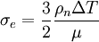,
with the atom number density  and the
absorption constant 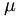. 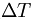
corresponds to the parameter laser_delta_temp.
and the
absorption constant 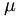. 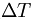
corresponds to the parameter laser_delta_temp.
The second heating mode works by continuous rescaling of the atomic velocities
after every IMD timestep. The energy gain in a single time step is proportional
to the timestep itself and to a source term, which depends on time t and depth
below the surface x like  , that is,
an exponential decrease in depth with a gaussian time profile. This heating
mode expects the fluence in the parameter laser_sigma_e, the time of maximum
intensity and the width of the gaussian pulse in the parameters laser_t_0 and
laser_sigma_t. To activate this mode, it is enough to assign a value larger
than zero to laser_sigma_e. By integration over time and depth one receives the
relationship 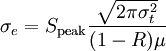.
, that is,
an exponential decrease in depth with a gaussian time profile. This heating
mode expects the fluence in the parameter laser_sigma_e, the time of maximum
intensity and the width of the gaussian pulse in the parameters laser_t_0 and
laser_sigma_t. To activate this mode, it is enough to assign a value larger
than zero to laser_sigma_e. By integration over time and depth one receives the
relationship 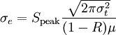.
The third heating mode works only in conjunction with the TTM-integrator for simulations with the Two-Temperature-Model. It is automatically activated if IMD was compiled with the ttm and laser make-options. It works with the same source term and parameters as the second mode (see above), but the energy is exclusively added to the electronic subsystem. Of course, some more parameters are required to configure the ttm integrator. To reduce the effects of reflected pressure waves, a damping module was implemented in IMD named pdecay.
This option is a modified version of the second heating mode from the laser option. In addition to rescaling the atomic velocities, an intensity profile is applied. The intensity profiles are controlled by the parameter laser_tem_mode, which needs three numbers. The first number specifies the intensity profile, 0 for Laguerre polynomials and 1 for Hermite polynomials. The two following numbers define order and index of the polynomial. Example: laser_tem_mode 1 0 0 gives a profile with a Hermite polynomial (the one at the beginning), the two zeros define the shape of the TEM-mode (Transversale Electro-Magnetic-Mode). To adjust the laser beam relative to the y and z-axis, one has to specify the parameters laser_sigma_w_y and laser_sigma_w_z. For arguments smaller than 1, the beam will be adjusted relative to the y and z-length of the irradiated sample (i.e. laser_sigma_w_y = 0.5, laser_sigma_w_z=0.5 will center the beam). Arguments larger than one will give absolute distances relative to the left and bottom edge. The last parameter which needs to be specified is laser_sigma_w0, the beam waist.
laser_offset:
The density of the sample will be calculated automatically. In order to make this work, an offset from the laser needs to be introduced. This can be achieved e.g. with the following awk-script:
#!/usr/bin/awk -f
{
if (FNR==3)
print $1, $2+30., $3, $4, $5, $6, $7, $8, $9, $10, $11
else if (FNR>8)
print $1, $2, $3, $4+15., $5, $6, $7, $8, $9, $10, $11
else
print $1, $2, $3, $4, $5, $6, $7, $8, $9, $10, $11, $12
}
Usage: Copy this script in a script file offset.sh and make it executable (chmod a+x offset.sh). If you copy this script in the directory with a my_sample.chkpt file as your starting sample, then typing in a bash:
./offset.sh my_sample.chkpt > offset_my_sample.chkptwill add 15 Å to the front and back of the sample. The sample for the simulation start should be now offset_my_sample.chkpt. The option:
laser_offset 15now needs to be placed in your parameter file. To reduce the effects of refelcted pressure waves, a damping module was implemented in IMD named pdecay.
This option based on the model of Streitz and Mintmire (Phys. Rev. B 50, 11996 (1994)) enables IMD to compute the charges of a metal/metal-oxide system. The valencies are determined by minimization of the electrostatic energy, which is given by the expression
 .
.
 strictly depends on nuclear coordinates and is of no
consequence for the minimization, while
strictly depends on nuclear coordinates and is of no
consequence for the minimization, while
 and
and
![\widetilde{V}_{ij}=\left\{\begin{array}{cl}
J_{i}^{0}, & i=j \\ \left[f_{i}|f_{j}\right], & i
\neq j\end{array}\right.](electrostatic_matrix.png)
![\left[j|f_{i}\right]=\int\!\mathrm{d}^{3}r_{1}\,\frac{f_{i}\left(\ve{r}_{1}-\ve{r}_{i}\right)}{\left|\ve{r}_{1}-\ve{r}_{i}\right|}](na_pot.png)
![\left[f_{i}|f_{j}\right]=\int\!\mathrm{d}^{3}r_{1}\!\int\!\mathrm{d}^{3}r_{2}\,\frac{f_{i}\left(\ve{r}_{1}-\ve{r}_{i}\right)f_{j}\left(\ve{r}_{2}-\ve{r}_{j}\right)}{r_{12}}](cr_pot.png)
 (Slater 1s orbital). For a detail
examination of such integrals see Roothaan ((J. Chem. Phys. 19, 1445
(1951)). Both
contain one 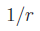 long-range term,
which is evaluated by the standard Ewald technique also included in IMD. The
values of 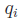 are chosen
as those that minimize
(Slater 1s orbital). For a detail
examination of such integrals see Roothaan ((J. Chem. Phys. 19, 1445
(1951)). Both
contain one 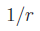 long-range term,
which is evaluated by the standard Ewald technique also included in IMD. The
values of 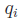 are chosen
as those that minimize  . This is the equivalent of
solving the system
. This is the equivalent of
solving the system
 ,
,
 . The
chemical potential
. The
chemical potential  follows from
the electronegativity equalization
condition. Above equation can be splitted into two systems of linear equations
(Modelling Simul. Mater. Sci. Eng. 16, 025006 (2008)):
follows from
the electronegativity equalization
condition. Above equation can be splitted into two systems of linear equations
(Modelling Simul. Mater. Sci. Eng. 16, 025006 (2008)):
 and
and  with 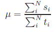 and 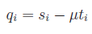
. For solving this systems a conjugate gradient method is applied.
with 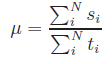 and 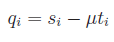
. For solving this systems a conjugate gradient method is applied.
Implemented by Andreas Chatzopoulos and Johannes Roth.
This option enables IMD to compute the heat conductivity of a sample. It is automatically activated by the nvx ensemble. The sample is divided into tran_nlayers layers. The temperature of layer 0 is initialized to starttemp + dTemp_start, and linearly moved to starttemp + dTemp_end during the simulation. Similarly, the temperature of layer tran_nlayers/2 (in the middle of the sample) is initially set to starttemp - dTemp_start, and linearly moved to starttemp - dTemp_end. The time, the heat conductivity, and the temperatures in layers 0 to tran_nlayers/2 is written to the file <basename>.tempdist every tran_interval steps.
The option stress enables the computation of the stress or pressure tensor. This is a non-negligible extra effort, and should be done only when the pressure distribution or the pressure tensor is needed. The global, scalar pressure is always computed. If the option stress is enabled, the components of the global pressure tensor are written to the properties file every eng_int time steps. It is also possible to write out distributions of the scalar or tensorial pressure, and to write out the pressure tensor contribution of each atom every press_int time steps, by setting the press_int parameter to a positive value.
Writes the average of the modulus of a (random) force component to the .eng file. This should be a good measure for the degree of relaxation in a relaxation simulation.
Writes the Einstein frequency to the .eng file. This value can be used as inv_tau_eta for a Nose-Hoover thermostat. This option is supported in NVE, NVT and NPT simulations only.
Only those atoms (no virtual atoms) which have a potential energy between e_pot_lower and e_pot_upper (must be specified for all ntypes) are written in <outfile>.ef.<n>, where <n> is a running number. This happens every ef_checkpt_int step.
Option for free energy simulations using the Frenkel-Ladd method (J. Chem. Phys. 81 (1984) 3188). Runs a simulation where the native interaction (lambda=0) can be switched to an Einstein crystal (lambda=1) with harmonic springs between the initial and the current atom positions. Implemented by Johannes Roth.
If force_int > 0, the forces on atoms are written every force_int steps into the file <outfile>.wf.<n>, where <n> is a running number. If force_all = 0, only the forces of atoms whose virtual type differs from the real type are written (default); otherwise, the forces of all atoms are written.
This option enables IMD to compute the average position of the atoms during a time interval. The averaging begins at step avpos_start (default 0) and ends at step avpos_end (default maxsteps). Every avpos_int steps, the averaged positions are written in an output file <outfile>.<n>.avp. The output file further contains the average potential energy of the atoms. After writing the output, the averaging begins with the actual atom positions. The number of steps between additions of coordinates is specified by the parameter avpos_res. For each avpos output file, an avpos iteration file is written which has the name <outfile>.<n>.avp.itr and contains the actual box vectors. When an NPT ensemble is used, the averaged box vectors are written in this file.
This option is required for the generation of truncated icosahedra quasicrystals, one of the few structure types IMD can generate itself.
Compute coordination numbers. The cutoff radius for neighbor counting is atom type dependent: counted as a neighbor of an atom of type i are those atoms of type j, which are within a cutoff radius r_ij. The cutoff radii must be specified as a ntypes2-dimensional vector nb_rcutin the parameter file.
Compute order parameter closely related to the potential energy. This option is mainly useful for two-dimensional binary tiling quasicrystals. In quasicrystals the potential energy of atoms of the same type can be quite different, depending on their neighbourhood, so that defects can be hard to detect. The order parameter - which is printed in the output files in place of the potential energy - narrows the potential energy distribution and improves the visibility of defects.
Only atoms within a sphere of a certain radius which is specified in the ntypes2-dimensional vector op_rcut contribute to the order parameter: their potential energy, weighted by the number specified in the ntypes2-dimensional vector op_weight is added up.
Two-dimensional binary tiling quasicrystals obey in their ground state a linear relation in the numbers of neighbors. With the choice
op_rcut 1.50 1.25 1.25 0.85 op_weight 1.00 0.25 0.50 1.00
all atoms will then have the same value of the order parameter in the ground state, and defects become visible through deviations from this value. In three dimensions, such a simple relation usually doesn't exist.
This option allows the damping of pressure waves, which are reflected at the back of the sample. It is usually used together with the laser or laseryz modules. Four different modes exist. A mode is set via pdecay_mode, so that e.g. pdecay_mode 2 sets mode 2. Mode 0 linearly scales down the momenta of the atoms, mode 1 is a quadratic scale down of the momenta. The modes 2 and 3 add a friction part to the forces. Mode 2 in a linear and mode 3 in a quadratic fashion. The value xipdecay is a constant friction parameter, that has to be specified for mode 2 and 3. The damping zone can be specified via the parameter ramp_fraction. The possible values for ramp_fraction are between 0 and 0.9. They define the damping range relative to the sample size. A ramp_fraction of e.g. 0.4 will create a damping ramp with a size of 40% of the sample's length, starting at the back.
Usage example: xipdecay 4.0 pdecay_mode 2 ramp_fraction 0.4
Determines the time-averaged distribution of atoms in a rectangular block of material between the lower left corner atdist_ll and the upper right corner atdist_ur. For this purpose, the block is divided into a rectangular array of bins, of dimension atdist_dim. Each bin contains a counter for each atom type, and every atdist_int time steps such a counter is incremented if an atom of the given type is located in that bin. This recording is started at time step atdist_start, and stopped at time step atdist_end. Small samples can be periodically extended in order to fill a large enough block, using the parameters atdist_per_ll and atdist_per_ur, which are integer vectors specifying the lower left and upper right corners, respectively, of the the periodic array of copies of the sample. It is the user's responsibility to choose this array large enough. The parameter atdist_phi, which is given in multiples of 2 Pi, can be used to rotate the sample around the z-axis, before it is mapped to the array of bins. Furthermore, the positions and types of all atoms in the block are written every atdist_pos_int time steps to files *.cpt, which can be used for visualization with the Covise program. The resulting distribution files *.atdist can be analysed and converted with the utility program atdist.
This option is parallelized only by OpenMP, not by MPI.
Determines the diffraction pattern of a rectangular block of material between the lower left corner diffpat_ll and the upper right corner diffpat_ur by Fast Fourier Transform (FFT). For this purpose, the block is divided into an array of bins, of dimension diffpat_dim. Each bin contains a counter for each atom type, and every time step such a counter is incremented if an atom of the given type is located in that bin. Every diffpat_int time steps, the FFT of the resulting distrbution is computed, its intensities are added up, and the array is cleared. In other words, the contributions of time slices of diffpat_int steps are added up incoherently. The recording of the diffraction pattern is started at time step diffpat_start, and stopped at time step diffpat_end. The scattering strength of the different atoms types, usually propotional to the charge of the nucleus, must be given with the parameter diffpat_weight.
Note that the resulution of the diffraction pattern (the size of its pixels) is inversely proportional to the size of the block of material, whereas the dimension of the distribution array determines the range of reciprocal space for which the diffraction pattern is computed. Unlike to option atdist, the sample is not periodically extended in order to fill the block. The resulting diffraction pattern files *.diffpat can be analysed and converted with the utility program diffpat.
This option is parallelized only by OpenMP, not by MPI. It also requires the FFTW library, whose location must be configured in the Makefile.
Monoatomic Lennard-Jones system. The masses are all set to 1, and particles have no number. All this saves space, which is useful for world records.
Editor's remark: Part of this could also be achieved by using only one mass variable per atom type, instead of one per atom.
Special version for one atom type. Hard coding of the number of different atom types makes IMD faster.
Do everything with single precision (default is double precision). This saves space, which is useful for world records.
Imd uses by default a 3-point Lagrange interpolation to determine the interaction energy and the forces. This option switches to a 4-point Lagrange interpolation.
The output is written with a higher precision.
Compile with debug flags.
This option gives an idea how much time is spent in IO.
Compile with profiling support.
This option enables the simulation of vacuum deposition of atoms. For more details take a look at the description of the EPITAX implementation.
This option permits the application of an external potential. I.e. it can be used to simulate and indentor. See Ju Li, Phys. Rev. B 67 (2003) 104105
This method can be used to simulate reaction path ways by the nudge elastic band method.
Option for computing transport properties by the Müller-Plathe non-equilibrium exchange method, see J. Chem. Phys. 106 (1997) 6082.
removes the net momentum, assuming equal masses.
The purpose of this option is to work with a two-dimensional system with two degrees of freedom, but the computation runs in three-dimensions. The 3*r_cut-condition for minimal cell size is establihed by "cloned" atoms which move exactly as their parents do.